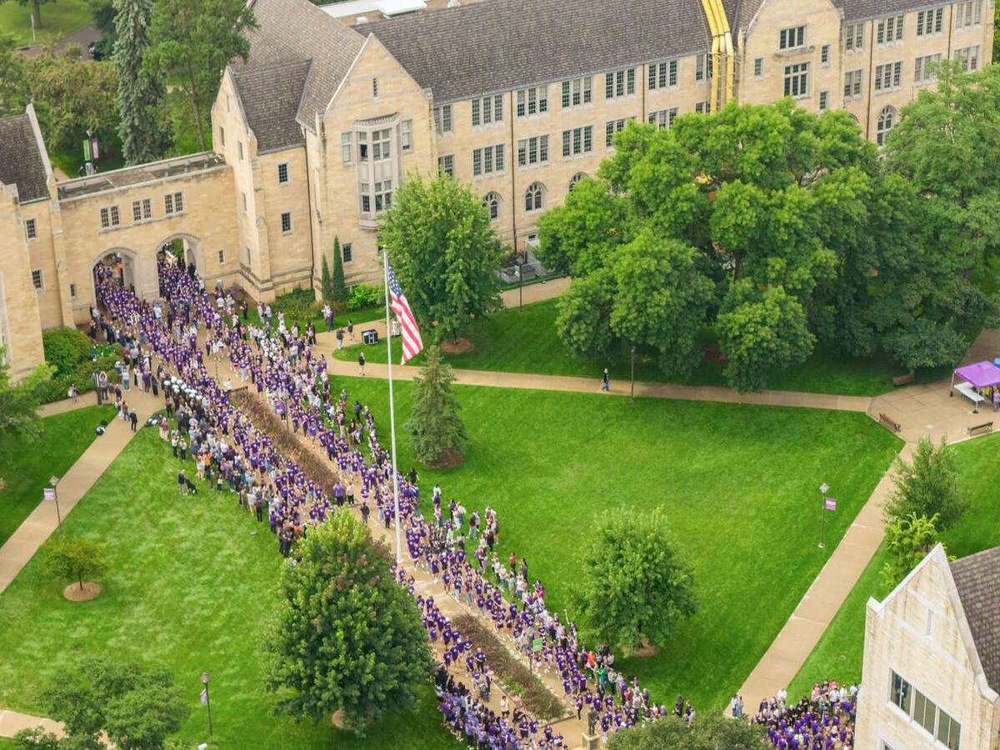

University of St. Thomas AI Surveys, 2025 and 2026
How St. Thomas students, faculty, and staff use and view AI
2,398 survey responses across two years. Each section asks you to guess a number first, then shows the answer and the university supports that respond to it.

Who responded
- Students
- in 2025
in 2026 - Faculty
- in 2025
in 2026 - Staff
- in 2025
in 2026
How to read the charts
- Your guess
- 2025 survey (hollow circle)
- 2026 survey (filled circle)
Part 1 of 3
What changed in a year
The same groups answered matched questions in 2025 and 2026. Where a question’s wording changed, the chart says so.
How often people use AI
Weekly or more frequent use rose in all three groups. Staff went from 50.5% to 60.2%, students from 36.6% to 50.3%, and faculty from 33.1% to 58.7%. A third of staff now use AI daily.
Use generative AI weekly or more
Percent of respondents, 2025 and 2026. All three increases are statistically significant.
Wording change for faculty. In 2025 faculty answered separately for teaching and for research; the chart counts the more frequent of the two. Teaching alone was 26.3%. In 2026 the question asked about “primary academic or professional work,” so part of the faculty increase reflects the new wording.
Full frequency breakdown as a table
Staff using AI weekly or more, by role
Role groups with at least 20 respondents in a year. Descriptive; most role-level changes are within sampling error.
What helps
Access- Microsoft Copilot ChatSign in with your St. Thomas account. Approved for all four data classifications.
- BoodleBoxSeveral AI models in one workspace, free for faculty and staff. Request an account in TDX.
- Aquinas AISt. Thomas’s own platform. Phase II pilot opens to faculty, staff, and students in November 2026.
- Which tool for which dataSee the data guide before you paste anything in.
What people worry about
Concern about AI weakening critical thinking is at or near the top for every group. Among staff it rose from 83.7% to 92.5%. Concern about writing and reading skills and about energy use also grew, while concern about cheating and misinformation held steady or eased.
Concerned or very concerned
Percent, 2025 and 2026, sorted by 2026. * marks a statistically significant change (p < .05).
Scale change. The 2025 scale ran from strongly concerned to strongly unconcerned with a neutral midpoint; the 2026 scale ran from very concerned to not concerned. Both years are compared as the top two categories, following the published student analysis.
All concerns for all groups as a table
What helps
Capability and Culture- AI Ethics badgeSelf-paced in Canvas, open to faculty, staff, and learners.
- CIC AI Ready: Cheating, Authorship, and Academic TrustFree Zoom series, November 5, 12, and 19, 2026.
- Magnifica Humanitas learning communityFaculty and staff reading Pope Leo’s encyclical on AI together.
- AI Course AttributeCourses labeled AI-Skills Intensive, AI-Skills Integrated, or AI-Free. About the attribute
How people rate university support
In 2026, 36.7% of faculty and 26.3% of staff agree the university offers adequate AI training. Clear guidelines rate lowest of all: about one in four agree. Faculty views of guidelines and paid subscriptions improved; staff views held flat.
Agree or strongly agree that the university…
Percent, 2025 and 2026. * marks a statistically significant change.
Read the training row with care. The 2026 item added the word “adequate,” which sets a higher bar. In the same year, staff naming lack of training as a challenge fell from 60.9% to 43.0%. The 2025 staff items also offered “don’t know” (11% to 27% chose it); those answers are left out here.
Challenges staff named
Percent of staff selecting each, 2025 (n = ) and 2026 (n = ).
Very or extremely aware of the university’s AI initiatives
Percent. Faculty awareness rose; staff awareness fell. Both changes are statistically significant.
What helps
Capability- AI badges in CanvasGetting Started with Generative AI and AI Ethics now; AI Applications launches November 2026.
- CIC AI Ready webinarsFree on Zoom, the first three Thursdays of each month, 1 to 2 pm. Recordings available.
- STELAR workshops and consultationsOne-on-one help with BoodleBox and course tools. Fall learning opportunities
- Google AI Career Certificates500 licenses for students, faculty, and staff through CIC AI Ready and Coursera.
Part 2 of 3
Students, faculty, and staff side by side in 2026
The 2026 surveys asked all three groups the same core questions. Group differences here are descriptive.
Confidence, use, and whether AI belongs in the work
62.5% of students feel confident using AI effectively and responsibly, more than faculty (43.7%) or staff (45.6%). Yet students are the least likely to say AI is an appropriate tool for their work (42.3%).
Five measures across three groups
Percent, 2026. Students n = , faculty n = , staff n = .
These measures as a table
What helps
Culture- AI Practitioners GroupMonthly, in person: third Thursdays, 10 am to noon, STELAR Classroom (OSF Library LL21). Bring what you tried, including what did not work.
- Faculty learning communitiesAI for Teaching, Learning, and Research, and Magnifica Humanitas.
- Nexus AI ClubStudent-run sessions on how AI works and how to use it well.
What people ask the university for
Clearer guidelines is the first request in every group: 55.8% of staff, 47.4% of faculty, and 60.4% of students, who ranked it first or second of seven options. Access to paid tools and training follow.
Most requested supports
Students ranked seven options (share placing each first or second, n = ). Faculty (n = ) and staff (n = ) selected all that apply.
What helps
Access, Capability, Culture- GuidelinesThe data guide, the Institute for AI for the Common Good’s policies and AI Literacy Framework, and the AI Course Attribute.
- ToolsCopilot Chat for everyone; BoodleBox free for faculty and staff; Aquinas AI from November.
- TrainingBadges, CIC AI Ready webinars, and STELAR workshops.
Time saved, and who is building
53.9% of staff say AI has saved them time on balance; 6.1% say it cost time. Faculty are more mixed: 46.6% saved, 20.2% cost. About one in five faculty and one in seven staff have built their own AI assistant, and about a third of each group would like to.
Effect of AI on weekly workload
Percent. “Too early to tell” not shown.
Built a custom AI assistant (a Custom GPT, Claude Project, Gemini Gem, or BoodleBox bot)
Percent.
AI tools in use
Percent of each group’s respondents to the item. The staff survey had no “none” option, so staff shares are of those who chose at least one tool.
What helps
Culture and Capability- Build with helpSTELAR consultations on building BoodleBox bots and course assistants.
- Share what saves timeDemo a workflow at the AI Practitioners Group.
- Tommie ToolkitUniversity-built AI tools in Canvas for faculty and staff, with a “Submit an idea” link.
Part 3 of 3
Your guesses and next steps
How your guesses compared
Make a guess in any section and it appears here. Guesses stay in this browser only.
| Question | Your guess | Survey result | Difference |
|---|
Find your next step
St. Thomas organizes its AI work around one idea: AI Enablement = Access × Capability × Culture. The factors multiply, so a gap in any one limits the whole.
Access
Secure, supported AI tools in people’s hands
- Microsoft Copilot ChatYour St. Thomas login
- BoodleBoxFree for faculty and staff; request in TDX
- ChatGPT Business and Claude TeamLicensed through departments and units
- Aquinas AIPhase II pilot November 2026; everyone in 2027
Capability
Skills and practice through training, badges, and support
- AI badgesGetting Started, AI Ethics, AI Applications
- CIC AI ReadyFree monthly webinars; Google AI Career Certificates
- STELARWorkshops and one-on-one consultations
Culture
Trust and room to experiment, build, and fail
- AI Practitioners GroupThird Thursdays, 10 am to noon, STELAR Classroom
- Learning communitiesAI for Teaching, Learning, and Research; Magnifica Humanitas
- Institute for AI for the Common GoodWorking groups open to faculty and staff
Which tool for which data
From the St. Thomas AI tools and data use guide. Even in an approved tool, remove or de-identify data the task does not need.
| Tool | Green | Yellow | Orange | Red |
|---|---|---|---|---|
| Personal or consumer accounts (ChatGPT, Claude, Gemini) | Yes | No | No | No |
| Aquinas AI | Yes | Yes | No | No |
| BoodleBox | Yes | Yes | Yes | No |
| ChatGPT Business | Yes | Yes | Yes | No |
| Claude Team | Yes | Yes | Yes | No |
| Microsoft Copilot | Yes | Yes | Yes | Yes |
| Examples | Press releases, campus maps, athletic results | Internal procedures, memos, business email, unpublished research | FERPA data, employee records, donor history, contracts | SSNs, payment cards, protected health information, identifiable human subject data |
Full policy: Data Security Classification Policy.
Sources and methods
Data
- St. Thomas Student AI Survey, 2025 ( valid responses) and 2026 ().
- St. Thomas Faculty AI Survey, 2025 () and 2026 ().
- St. Thomas Staff AI Survey, 2025 () and 2026 ().
Methods notes
- Respondents who answered fewer than half of the non-demographic questions were excluded, matching the published student analysis. Item-level n varies with nonresponse; percentages use those who answered each item.
- Year-over-year changes were tested with two-proportion z-tests (alpha .05, no correction for multiple comparisons). Group differences in 2026 are descriptive.
- Wording and scale changes: the faculty use question (teaching and research in 2025, primary work in 2026); concern scales (bipolar in 2025, unipolar in 2026, compared as the top two categories); the training item (“adequate” added in 2026); staff “don’t know” options in 2025 support items (excluded); the middle label of the staff awareness scale.
- Staff role groups are self-reported. Groups with fewer than 20 respondents in a year are not shown.
- All surveys are voluntary self-report and may not represent everyone in each group.
References
- Brod, G. (2021). Generative learning: Which strategies for what age? Educational Psychology Review, 33, 1295–1318.
- Knezek, G., Christensen, R., & Fluke, R. (2003). Testing a will, skill, tool model of technology integration.
- STELAR. Students and AI at St. Thomas: student survey evidence and course design tools.